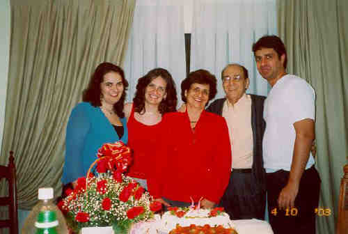
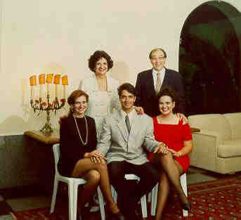
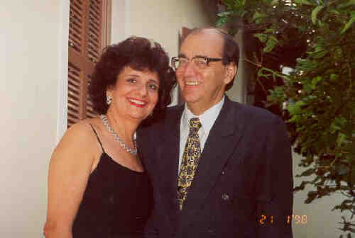
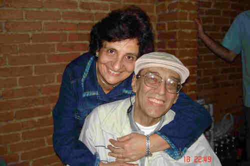
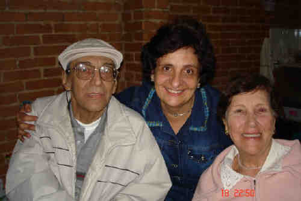

|
João Carlos Renda (1946-) |
João Carlos Renda
 • fotos: Juliana - Carmen Eloisa - Pierina - João - João Carlos.  • fotos: Pierina - João - sentados: Carmen Eloisa - João Carlos - Juliana.  • fotos: Pierina e João Carlos. • fotos: Pierina e João Carlos.  • fotos: Pierina e João Carlos. • fotos: João Carlos.  • fotos: João_Pierina_ mãe do João. João casad[:o::a] Pierina Petrella, filha de Roque Petrella e Eloisa Banzoli, em 9 Set 1971. (Pierina Petrella nasceu em em 4 Out 1949 em Registrada No Cartório Da Bela Vista - Sp.) |
 Eventos notáveis em Sua vida foram:
Eventos notáveis em Sua vida foram: